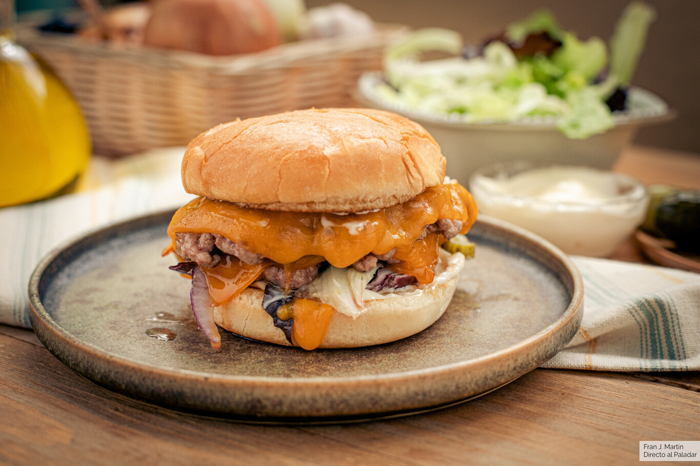
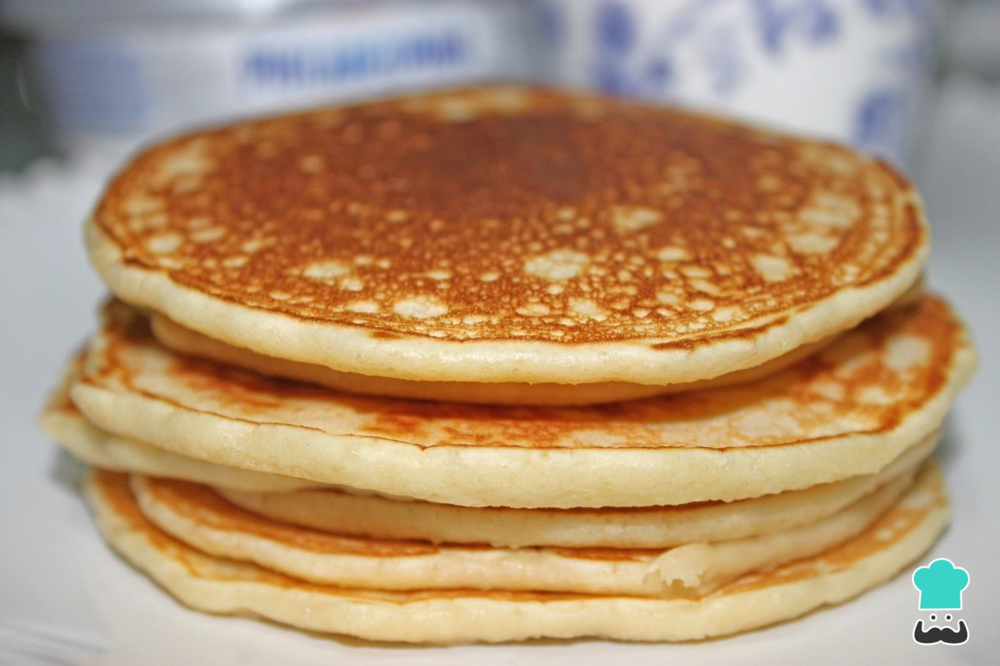

Juan Rafael Pedraza Gálvez | Álvaro Salado Palomares
¿Quieres hacer tus propias hamburguesas caseras, desde el principio, con la mejor carne picada e ingredientes? Sigue la receta con la preparación de la carne, hasta el plato final. El resultado es de autentico gourmet.
Adivina, adivinanza, ¿quién acaba de desayunar tortitas? De paso que me hice el pudin de pan preparé la masa de tortitas y han sido todo un éxito en casa.
No puedo dejar de compartir esta nueva receta de tortitas, muy sencillas y sobre todo, rápidas de preparar, en menos de 20 minutos tienes el desayuno preparado para toda la familia. No hay como una de nuestras recetas de postres para un desayuno o una merienda en familia.
Los espaguetis a la carbonara es probablemente la forma más internacional de preparar esta pasta. La auténtica salsa carbonara de italia contiene yema de huevo, queso y bacon. No tiene nata, ingrediente que le solemos añadir en España. Incluso hay muchas versiones que tan solo contienen nata. Puedes hacerla así, si quieres pero aquí, haremos unos espaguetis a la carbonara auténticos.
Pollo al curry, una receta exótica que nos traslada a otros lugares como la India y que desde que lo probé en un restaurante y me animé a hacerlo en casa se ha convertido en una de nuestras recetas de pollo favoritas ¡Es un sabor único!
Los flamenquines cordobeses son una tapa típica andaluza ya que aunque nació en Córdoba se ha ido extendiendo y es que no es para menos, su sencillez y su sabor y textura son buenas razones para ello. Sigue nuestra receta paso a paso para prepararlos muy fácilmente y conseguir un perfecto rebozado por fuera y en su interior un bocado jugoso.
La tarta de queso de Dulcespostres ha sido durante mucho tiempo la receta más popular del blog. Creo que su éxito se debe a que no necesita horno para su elaboración y es una receta de queso muy fácil de hacer y que tiene unos ingredientes muy económicos.
La elaboración de las hamburguesas caseras es muy detallada, partiendo de la carne picada, haciendo la mezcla para la masa, el moldeado de las hamburguesas, el asado o parrilla y la preparación del plata final. Puedes encontrar los detalles a continuación en este receta paso a paso.
1. Mezclamos la carne, ponemos un poco de pimienta, sal y movemos bien.
2. Añadimos un huevo entero.
3. Añadimos el ketchup y la mostaza.
4. Por ultimo la media cebolla tierna, bien picadita y mezclamos todo bien.
5. Hacemos 4 bolas de aproximadamente 200 g.
6. Ponemos a calentar una asadora a fuego medio – alto, en la mano nos ponemos un poco de aceite de oliva y lo ponemos sobre la hamburguesa. Asamos durante un par de minutos por cada lado hasta que quede dorada.
7. Preparamos el pan , poniendo bajo los canónigos, el tomate, y sobre estos la hamburguesa asada.
8. Por último los aros de cebolla morada, y tapamos con el pan, acompañamos con unas patatas fritas.
No puedo dejar de compartir esta nueva receta de tortitas, muy sencillas y sobre todo, rápidas de preparar, en menos de 20 minutos tienes el desayuno preparado para toda la familia. No hay como una de nuestras recetas de postres para un desayuno o una merienda en familia.
1. En un bol mezclamos los ingredientes secos, la harina, levadura, azúcar y sal. Reservamos.
2. Combinamos en otro bol los huevos batidos, la mantequilla derretida y la esencia de vainilla. Incorporamos los ingredientes secos y, con una varilla incorporamos a los líquidos.
3. Vertemos la leche y batimos, es muy importante que no batamos demasiado la mezcla. Se trata de integrarlos pero no es necesario intentar eliminar todos los grumos. Si lo batimos en exceso los pancakes nos quedarán demasiado duros.
4. Calentamos una sartén (debe ser aquella que tengamos para que no se pegue las cosas, la de las tortillas o cosas a la plancha).
5. Cuando esté caliente añadimos un cucharón de la mezcla de las tortitas, comenzando a verterlo por el centro y dejando que sea la propia masa la que se redistribuya en la sartén. Es importante que regulemos la temperatura hacia arriba o hacia abajo durante todo el proceso.
6. Si la masa no se cuaja al añadirla a la sartén estará demasiado fría y si, por el contrario la parte inferior se quema antes de que aparezcan burbujitas en la parte superior, estará demasiado caliente.
7. Cuando vemos que aparecen burbujas en la parte superior del pancake o tortita es el momento de darle la vuelta con una espátula. Cocinamos el pancake por el otro lado durante 30 o 40 segundos y retiramos.
8. Podemos añadir a la masa una vez que la vertemos en la sartén algún tipo de frutas frescas, arándanos, frambuesas, serán perfectas como acompañamiento.
9. Servimos las tortitas unos encima de otros haciendo una torre, bañados con miel, una merienda de rechupete. Como alternativa podemos sustituir la miel por crema de cacao casera o aquella que más os guste, ¡buenísimas! Incluso pueden ir con un toque de fruta… arándanos, plátano, fresas, cerezas o frambuesas, por ejemplo.
Los espaguetis a la carbonara es probablemente la forma más internacional de preparar esta pasta. La auténtica salsa carbonara de italia contiene yema de huevo, queso y bacon. No tiene nata, ingrediente que le solemos añadir en España. Incluso hay muchas versiones que tan solo contienen nata. Puedes hacerla así, si quieres pero aquí, haremos unos espaguetis a la carbonara auténticos. Y para ello, los ingredientes que necesitaremos serán:
1. Ponemos un puñadito de sal (generoso) en abundante agua hirviendo. Después añadimos los espagueti y los dejamos cocer aquí alrededor de 10 minutos. hasta que estén al «dente». Conviene removerlos con frecuencia sobre todo al principio de la cocción, para que no se peguen.
2. Mientras se cuecen preparamos la carbonara. En un bol añadimos las yemas de los huevos. La clara es mejor guardarla para otra elaboración ya que, si la añadimos, parecerá más una tortilla de espaguetis, que una salsa en sí. Pero si no te importa, puedes añadirla. Añadimos también el queso rallado y mezclamos ambos ingredientes con un tenedor. Quedará una especie de masa muy densa y ésta, será la carbonara.
3. En una sartén ponemos un pequeño chorrito de aceite. Cuando esté bien caliente, añadimos el bacon o la panceta, cortado en dados más bien pequeños. Pasados un par de minutos, cuando estén fritos, retiramos del fuego y reservamos
4. Una vez hecho esto y cuando los espaguetis estén cocinados, guardamos unos cuantos cucharones del caldo de la cocción. Después escurrimos los espaguetis del resto del caldo
5. Sin demora, ya que será el propio calor residual de los espagueti los que vayan a cocinar la carbonara, echamos la pasta en el bol donde la habíamos preparado. Añadimos el bacon, con el juguito que hayan podido soltar y un poco del caldo de la cocción. Removemos todo bien con un tenedor para que los espaguetis absorban toda la salsa. Si ves que queda muy densa, puedes añadir más caldo de la cocción, hasta que haya quedado una salsa muy cremosa (no olvides remover enérgicamente todo. La pasta es muy porosa y absorbe las salsa con relativa facilidad. Pero necesita ser removido para ayudar a este proceso)
6. Finalmente, cuando hayamos conseguido la cremosidad de la salsa deseado, espolvorear con abundante pimienta negra recién molida. Se dice que el nombre «carbonara» viene del color que le da esta especia, que recuerda el color del carbón. Servir inmediatamente
Hace tiempo que las recetas de curry dejaron de ser algo exótico en nuestras mesas, y yo que me alegro, pues aunque no sean las elaboraciones fielmente tradicionales de la cocina india nos permiten preparar comidas deliciosas con muy poco tiempo. Con esta receta de pollo al curry en 10 minutos tenemos un plato completo y sabroso listo en un periquete.
1.Para preparar la receta del pollo al curry lo mejor es empezar troceando el pollo. Coge las pechugas de pollo y límpialas muy bien de restos de huesecillos o grasa que puedan traer.
2.Una vez limpias, trocéalas en pedacitos de bocado. Mi consejo es que no los dejes demasiado grandes, como mucho en cuadrados de unos 3 centímetros más o menos. Salpimenta la carne. A continuación pon una sartén al fuego con un poquito de aceite.
3.Con el fuego fuerte, mete los trozos de pechuga y séllalos. Ese paso lo que pretende es hacer la carne por fuera pero que se mantenga jugosa por dentro. Mientras se hace el pollo, pela y trocea una cebolla. Intenta picarla muy pequeñita, tanto como para que no se note en la salsa al final de la cocción. En otra sartén pon un par de cucharadas de aceite y la cebolla.
4.Deja que se cocinen a fuego bajo durante varios minutos, hasta que veas que se pone transparente. Cuando veas que los trozos de pollo están dorados, retíralos del fuego. Cuando la cebolla esté hecha, pon el pollo encima. Dale un par de vueltas.
5. Añade también la nata (puedes sustituir la nata por leche de coco) y las dos cucharadas de curry. Pon también un poco de pimienta negra.
6. Deja que se cocine todo junto hasta que la salsa espese. Cuanto más tiempo lo tengas al fuego, más espesará, así que cuando esté a tú gusto lo puedes retirar del fuego. ¡Y así de fácil estará listo el pollo al curry!
Quizás la única dificultad por así decirlo es realizar una buena fritura pero si sigues nuestros consejos te quedarán estupendos. Si que es cierto que para freír bien lo mejor es ir adquiriendo cierta experiencia para saber entender el aceite y sus temperaturas y conseguir los mejores resultados, y también puedes optar por una freidora ya que simplifica mucho esta tarea. Si te gustan este tipo de rebozados seguro que te van a encantar los escalopines con salsa de cabrales y patatas panaderas y manzana al membrillo, y por supuesto el cachopo asturiano de ternera con patatas fritas y pimientos del piquillo.
1. Extiende los filetes de lomo de cerdo sobre una tabla y golpéalos con un martillo, mazo o similar para que se ablanden y queden planos y estirados. Yo utilizo un mazo que tengo para preparar mojitos, no tengo otro y me hace la función
2. Cubre cada filete con una loncha de jamón serrano (o media, según sean de grandes, aunque no pasa nada si la tienes que poner doble). Pon también queso en los que quieras que lo lleven. Fíjate en la fotografía, si lo pones córtalo en forma de barrita.
3. Enrolla los lomos con su rellenos dentro de forma que queden bien apretados y así verás que no se deshacen en ningún momento. Pon en un plato harina, en otro los huevos batidos y en otro pan rallado.
4. Una vez hecho esto y cuando los espaguetis estén cocinados, guardamos unos cuantos cucharones del caldo de la cocción. Después escurrimos los espaguetis del resto del caldo
5.Ahora ve pasando cada flamenquín por cada uno y por todos lados, incluidos los laterales. Primero por el de harina y después sacúdelos un poco para retirar el exceso de harina que puedan haber cogido.
6. Ahora toca freírlos y puedes hacerlo en sartén/cazo o en freidora.

He de deciros que yo siento cierta debilidad por esta tarta de queso, creo que debería deciros que es mi tarta favorita. Siento cierta atracción por todo tipo de tartas, pasteles, bizcochos, o cupcakes que lleven como ingrediente principal el queso, me encanta. Creo que es algo afín a muchos de vosotros y gracias a ello esta tarta de queso es la receta más visitada del blog.
1. Derretimos la mantequilla (usamos el microondas, es más rápido). Con la picadora trituramos las galletas (sino tuvierais, en un trapo de cocina echamos las 25 galletas y las envolvemos para luego machacarlas con una cuchara o algo pesado, no queda tan fino pero sirve igual) y añadimos por encima la mantequilla derretida.
2. Cogemos la mezcla de mantequilla y galletas y la repartimos por la base de un molde desmontable grande. Apretamos contra el fondo con la ayuda de una cuchara o con los dedos. Introducimos en la nevera mientras hacemos la crema de queso.
3.En un bol introducimos las dos tarrinas de crema de queso crema. Añadimos la mitad de la leche condensada y mezclamos con la batidora.
4.El paso más complicado viene por el tema de la gelatina. Ponemos 10 g. de gelatina neutra en un bol que esté seco. De 300 ml de agua (1 vaso y medio aprox.) de agua fría. Separamos una tacita y la añadimos a la gelatina.
5. Ponemos el resto del agua en un cazo al fuego hasta ebullición (o al micro directamente 2 minutos). Retiramos y vertemos el agua en el recipiente donde se había dejado la gelatina.
6. Removemos hasta su completa disolución. Mezclamos con la crema de queso y el resto de la leche condesada. Batimos ligeramente toda la mezcla para que quede homogénea y sin ningún grumo.
7. Montamos la nata. El mejor consejo, que todos los ingredientes estén fríos. Al contrario que en el merengue (que debe estar a temperatura ambiente) la nata debe utilizarse fría. La nata, el azúcar y el recipiente deben estar recién salidos de la nevera. Batimos el azúcar y la nata hasta que quede compacta. Os aseguro que con el truco del frío sale perfecto.
8. Mezclamos la nata montada con la mezcla de queso pero de manera suave. Utilizamos mejor una espátula de madera o silicona para que no baje la nata.
9. Sacamos el recipiente con la base de galleta de la nevera y echamos la crema de queso. Volvemos a introducir en la nevera unas 4 horas.